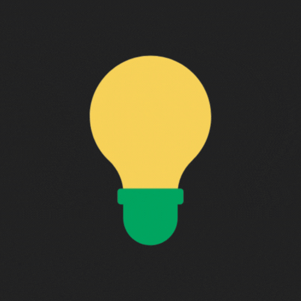
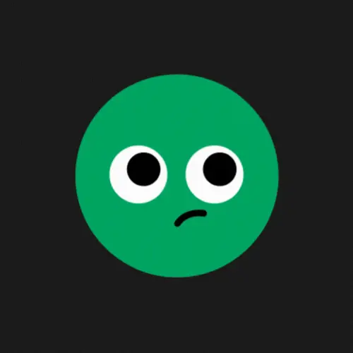
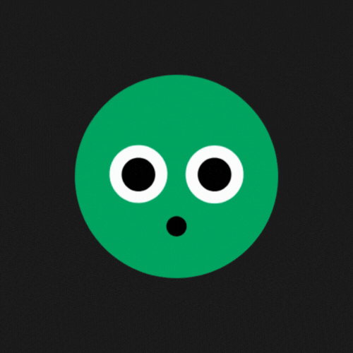
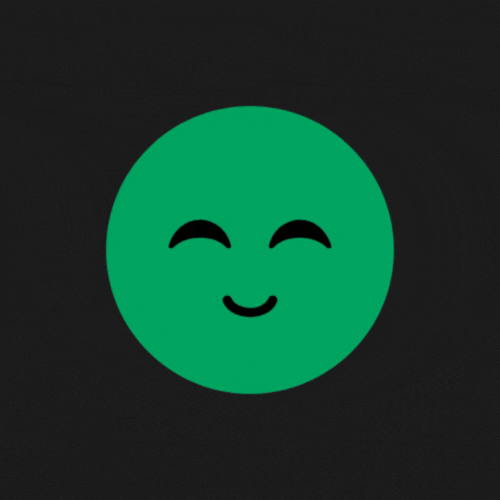
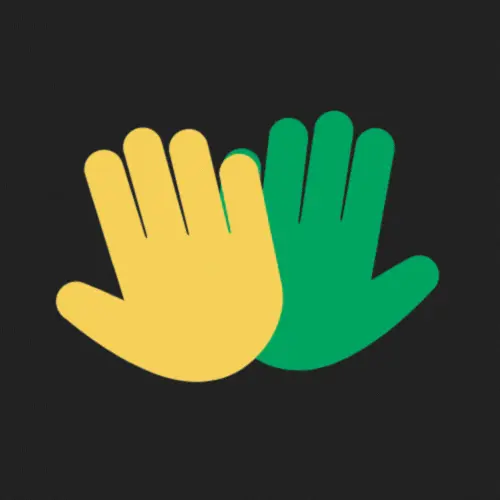
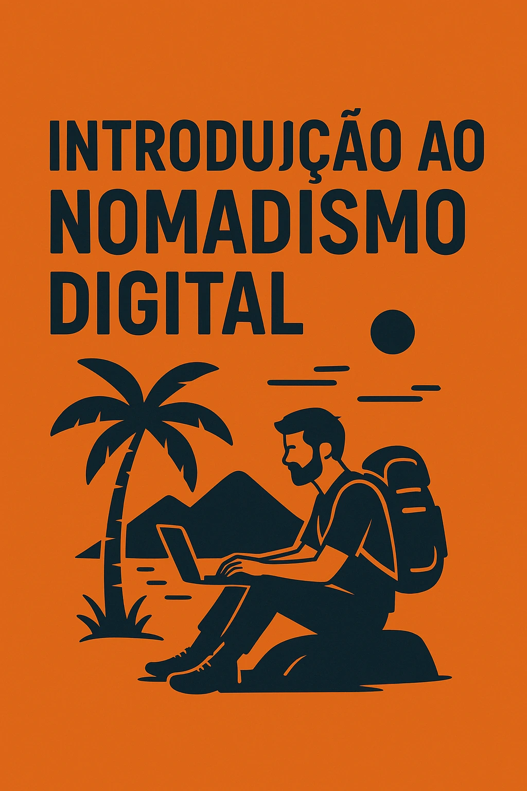
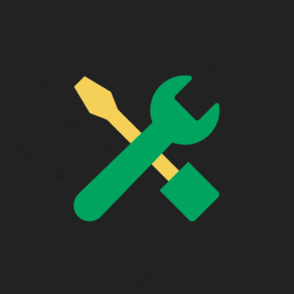

Sobre o projeto
FAQ – Nômade Digital na Prática

O que é um nômade digital?
Um nômade digital é uma pessoa que trabalha remotamente usando a internet e pode viver ou viajar por diferentes lugares do mundo, sem depender de um local fixo para trabalhar.

Como ser um nômade digital?
É necessário ter uma profissão que permita trabalho remoto (como marketing digital, design, programação, redação, etc.) e organizar rotina, finanças e ferramentas para garantir estabilidade trabalhando de qualquer lugar.

Quais as vantagens do nomadismo digital?
. Liberdade geográfica e de horários
. Qualidade de vida e experiências culturais
. Possibilidade de trabalhar viajando
. Autonomia profissional e pessoal

Comece Agora Sua Jornada Nômade

eBooks Essenciais para Sua Transição Nômade



